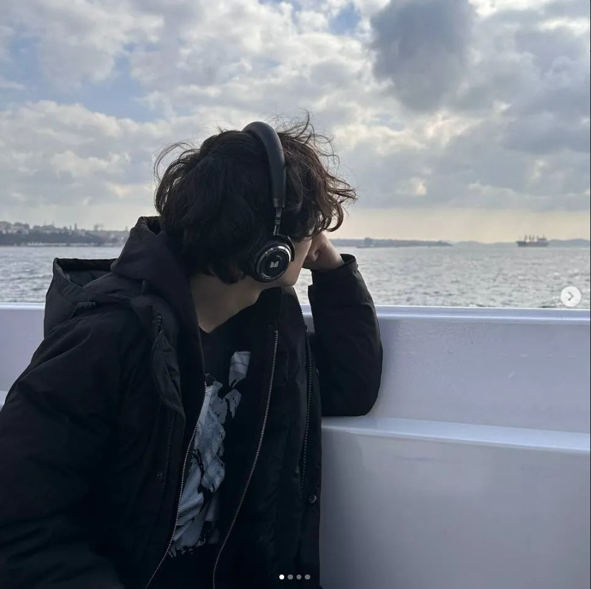
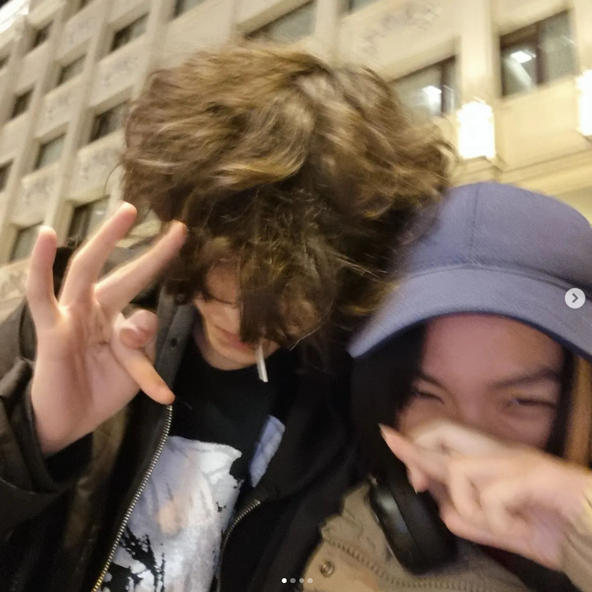
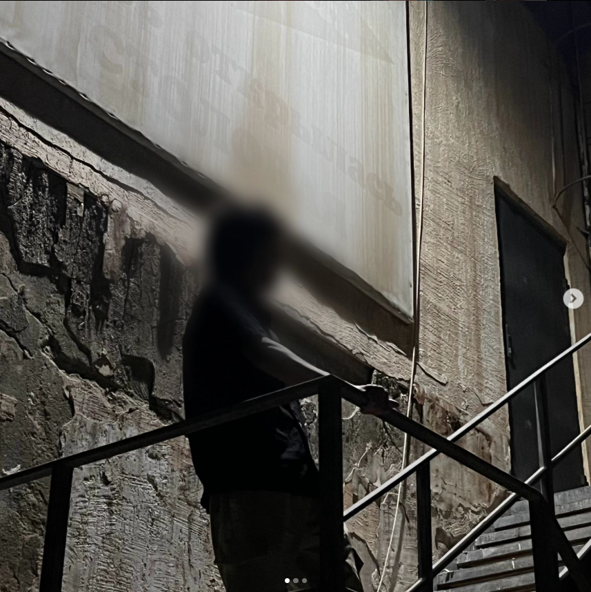

My Full Name - Ibadulla Yernar Amanqosuly



Yernar is a person who deeply analyzes his actions, but sometimes this leads to excessive doubts and delays in decision-making. He tends to avoid risks, preferring stability, which occasionally prevents him from trying new things. His reserved nature and cautious communication style may create an impression of detachment, though inside he experiences more than he shows. At times, Yernar takes on too much, which leads to exhaustion, but despite this, he continues to search for ways to achieve his goals, even if not always confidently.
My Skills
Technical Skills:
- Basic and advanced computer operation skills.
- Ability to work with BIOS and system settings.
- Proficiency in HTML and CSS for web development.
- Strong understanding of video games, especially CS2 (analytics, strategy, tactical thinking).
- Adaptability to new technologies and skills.
Communication Skills:
- Ability to communicate with people at different levels and adapt to the audience.
- Teamwork and understanding the importance of collaboration.
- Constructive dialogue and negotiation skills.
Professional Skills:
- Problem-solving mindset and critical thinking.
- Time management and ability to meet deadlines.
- Fast learning and ability to acquire new knowledge efficiently.
- Strong work ethic and attention to detail.
- Basic knowledge of cybersecurity and IT infrastructure.